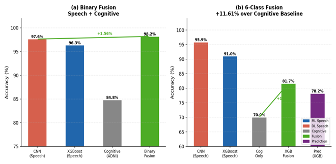

AI-Based Early Detection of Alzheimer's Disease Using Speech and Cognitive Analysis
Alzheimer's disease is typically diagnosed only after significant cognitive decline has already occurred, and current diagnostic methods are expensive and invasive. I wanted to explore whether speech patterns and cognitive assessment data could support earlier, less invasive detection.
I developed an AI-based system combining speech pattern analysis, cognitive feature extraction, and machine learning to identify early indicators of Alzheimer's disease — building a feature extraction pipeline from speech data, applying cognitive pattern analysis, and training models to detect early-stage indicators.
One decision I had to own directly: the dataset wasn't paired across all tasks, so a single fusion strategy wouldn't work cleanly for every part of the problem. I used decision-level fusion for the binary classification task, and feature-level fusion for the six-class classification task, choosing each based on what the unpaired data actually allowed rather than defaulting to one method throughout. That kind of judgment call — deciding how to combine modalities when the data doesn't hand you a clean answer — is the part of this work I'd most want to talk through with a research group.
This research was conducted with a co-author, with roughly even contribution across the pipeline. My specific ownership included the fusion strategy decision above — choosing decision-level fusion for the binary task and feature-level fusion for the six-class task — and I'm a co-author on the manuscript under review at IEEE JBHI.

The manuscript is currently under review at the IEEE Journal of Biomedical and Health Informatics (JBHI). A related conference paper on this work has been peer-reviewed and is currently undergoing requested revisions.